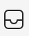
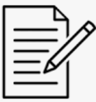

Welcome
In the upcoming experiment phase, you'll have the chance to apply what you've learned before by exploring various websites.
It's important for you to
understand the purpose of this phase and to do your best in implementing the concepts you've learned.
Icon Introduction
-
Icon 1: This is the email information.

-
Icon 2: This is the notification.
-
Icon 3: This is the card information.
-
Icon 4: This is the Exit Button. If you think you cannot solve the dark patterns, you can opt not to use websitea by using this button.

-
Icon 5: This is the Report Button. If you have any comments about the patterns you can click this to submit.
